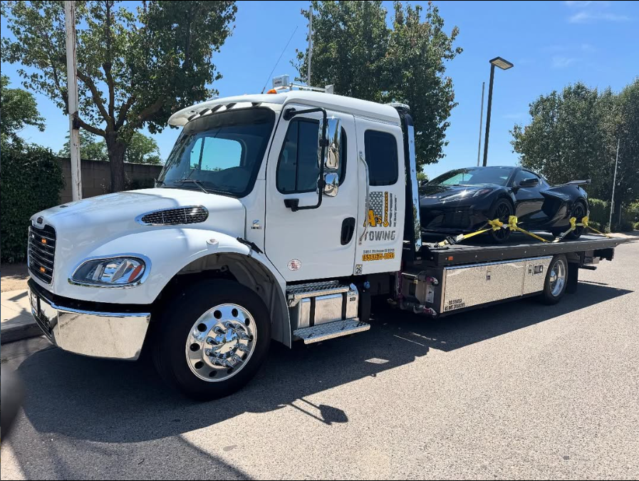

Owner & Manager Programs
Businesses, apartment communities and private lots can discuss towing arrangements based on their parking policies and property needs.
Private property towing and property monitoring programs for businesses, apartment communities and dealerships in Fresno and Clovis.

Private property vehicle removalUnauthorized vehicles can interfere with customers, tenants and daily operations. Private-property towing works best when the process is clear, consistent and aligned with the property owner’s rules.
Businesses, apartment communities and private lots can discuss towing arrangements based on their parking policies and property needs.
Monitoring frequency and authorization procedures can be structured around the property owner’s established guidelines.
Dealerships and businesses can also discuss recurring towing, vehicle returns and other property-specific recovery needs.
Talk with A’s Towing about the property, parking concerns and the type of towing arrangement you need so a practical service plan can be discussed.